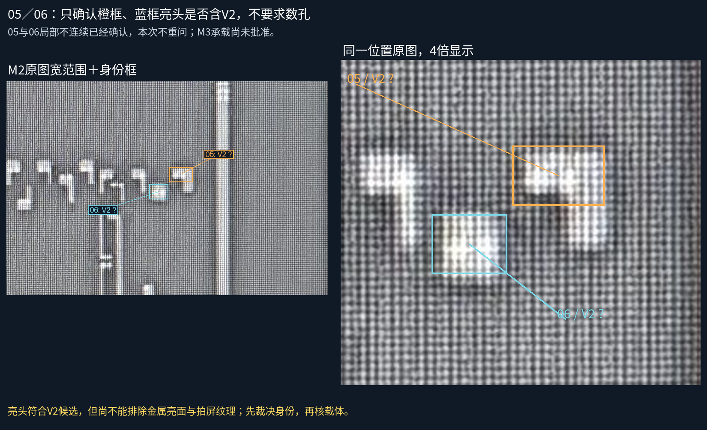
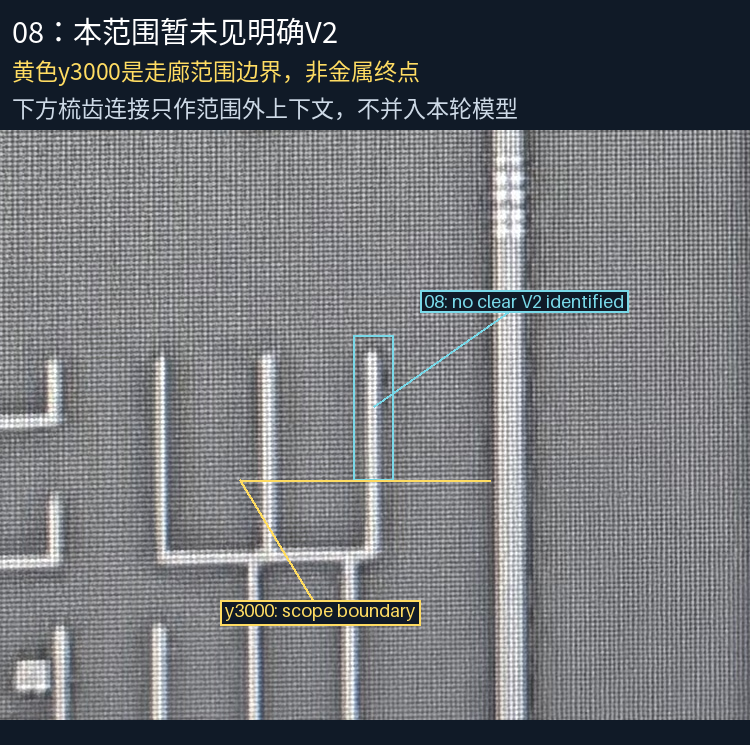

05、06亮头倾向V2候选，仍需身份裁决。08在走廊范围内未识别到明确V2，不代表物理无孔。05／06局部不连续已审，不重复询问。当前几何保持30金属、7接口、38设计候选孔。

05橙框亮头包含V2吗？06蓝框亮头包含V2吗？可答“05、06均为V2”、分别说明或仍不清楚。无需数孔，本轮不批准M3。

细竖段的下端y3000是检查范围边界；下方原图可见的梳齿结构只作上下文，不补建范围外接口。附近M3交叉不证明有V2。

M3的E1/E2仅作结构参照：上下顺序与间距支持搜索假设，但未指定载体，也没有未经核实的投影。08暂不补建、暂不要求人审物理不存在。